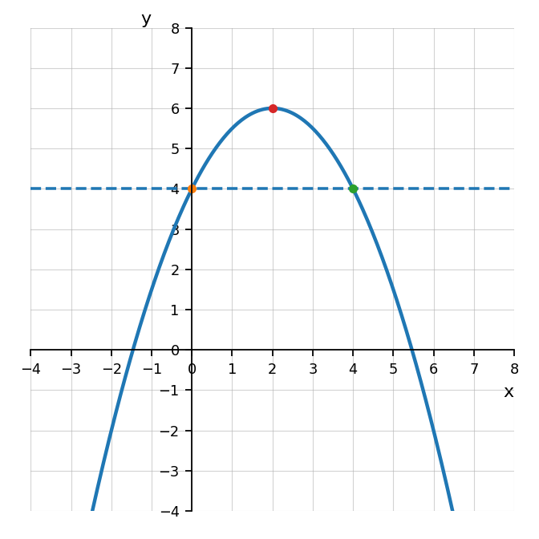
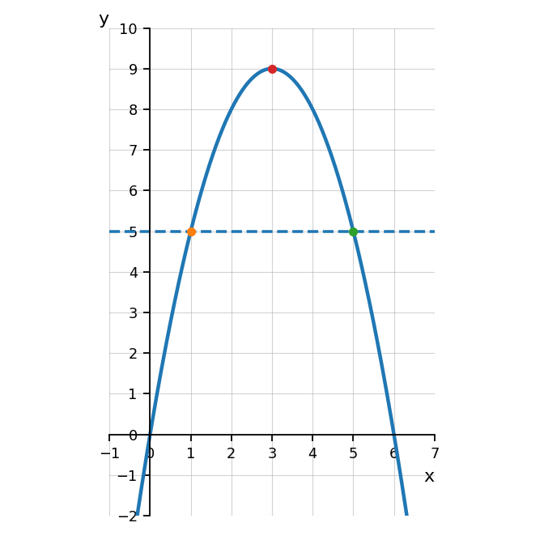
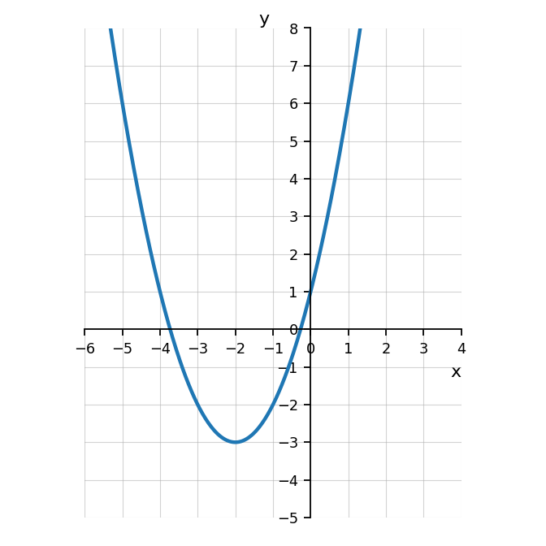

Practice Set 1.1.3
Let \(A(t)=5t+12\). Find the input \(t\) when \(A(t)=37\).
The graph of \(p\) and the horizontal line \(y=4\) are shown.
Evaluate \(p(2)\).
Solve \(p(x)=4\) from the graph.
Explain why there are two solutions.

Compare these two tasks for \(f(x)=x^2-4x\):
- Evaluate \(f(6)\).
- Solve \(f(x)=6\).
Complete both tasks and explain how they are different.
The graph models the height \(H(t)\), in feet, of a ball after \(t\) seconds.
Evaluate \(H(3)\) and interpret its meaning.
Solve \(H(t)=5\) using the graph.
Explain why both solutions make sense in context.

For each function, identify the vertex and whether the vertex represents a maximum or minimum.
\(y=(x+2)^2-9\)
\(y=-3(x-1)^2+8\)
\(y=\frac12(x-5)^2+4\)
The graph of a quadratic function is shown.
Identify the vertex.
State the axis of symmetry.
Does the vertex represent a maximum or minimum?
Write a possible equation in vertex form.

Which equation represents a parabola with axis of symmetry \(x=3\)?
\(y=(x+3)^2-1\)
\(y=(x-3)^2+2\)
\(y=3(x+1)^2\)
\(y=x^2-3\)
Describe the transformation from \(y=x^2\) to \(y=-(x+1)^2+4\). Use the words shift, reflect, and vertex in your answer.
A parabola has vertex \((3,7)\) and passes through the point \((5,15)\). Write the equation in vertex form.
The graph of a quadratic function has vertex \((-4,1)\) and opens downward. Which of the following could be its equation? Explain your choice.
\(y=2(x+4)^2+1\)
\(y=-2(x+4)^2+1\)
\(y=-2(x-4)^2+1\)
\(y=2(x-1)^2-4\)
A parabola has vertex \((1,6)\) and passes through \((3,-2)\). A student reasons \(y=a(x+1)^2+6\), then uses \((3,-2)\) to find \(a=-\frac12\). Identify the error and solve correctly.
A bridge arch is modeled by a quadratic function with vertex \((0,30)\). The arch touches the ground at \((-10,0)\) and \((10,0)\).
Write the equation in vertex form.
Explain why the graph must open downward.
Find the height of the arch when \(x=5\).
State the domain and range that make sense in context.
Explain how the intercepts and vertex support your model.
Simplify each expression.
\(x^0\)
\(7^0\)
\((-4)^0\)
\((3a^2b)^0\)
Simplify each expression. Write answers with positive exponents.
\(x^4\cdot x^{-7}\)
\(a^{-3}\cdot a^9\)
\(m^{-5}\cdot m^{-2}\)
Compare the expressions:
\[(3x)^2\]
and
\[3x^2\]
Are they equivalent?
Use \(x=4\) to test both expressions.
Explain the difference in structure.
The expression
\[\dfrac{2^x\cdot 8^{x+1}}{4^{2x-1}}\]
can be rewritten as a single power of \(2\).
Rewrite every factor with base \(2\).
Simplify to a single power of \(2\).
Explain why using the same base makes the expression easier to simplify.
Check Your Understanding 1.1
Identify the vertex of each quadratic.
\(y=(x-3)^2+5\)
\(y=(x+4)^2-2\)
\(y=-2(x-1)^2+7\)
For each function, identify the vertex and whether the vertex represents a maximum or minimum.
\(y=(x+2)^2-9\)
\(y=-3(x-1)^2+8\)
\(y=\frac12(x-5)^2+4\)
The graph of a quadratic function is shown.
Identify the vertex.
State whether the graph opens up or down.
Describe the vertical stretch or compression compared to \(y=x^2\).
Write a possible equation in vertex form.

A quadratic function has vertex \((2,-5)\), opens upward, and has no vertical stretch or compression. Write its equation in vertex form.
A quadratic function is written as \(f(x)=a(x-h)^2+k\). If the vertex is \((4,-1)\) and the graph passes through \((6,11)\), determine \(a\) and write the function.
A football is kicked and its height can be modeled by \(h(t)=-2(t-3)^2+20\), where \(t\) is time in seconds and \(h(t)\) is height in feet.
What is the maximum height?
When does the maximum height occur?
What does the vertex mean in this situation?
The table shows values of a quadratic function.
| \(x\) | -1 | 0 | 1 | 2 | 3 |
|---|---|---|---|---|---|
| \(y\) | 8 | 3 | 0 | -1 | 0 |
Identify the vertex.
State the axis of symmetry.
Write an equation in vertex form.
Explain how the table shows symmetry.
A company models daily revenue using \(R(p)=-20(p-15)^2+5000\), where \(p\) is the price of one item in dollars.
What price maximizes revenue?
What is the maximum revenue?
What is the revenue when \(p=10\)?
Find another price that gives the same revenue as \(p=10\).
Explain why two different prices can give the same revenue.